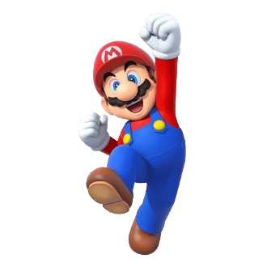
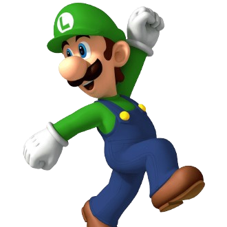
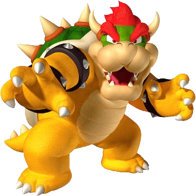
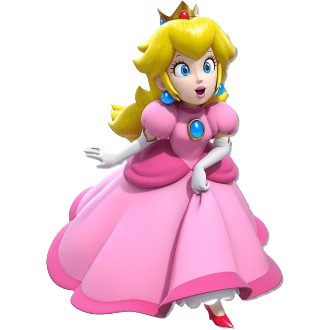
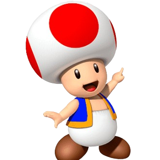
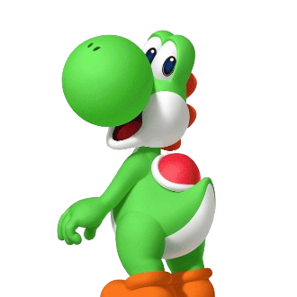
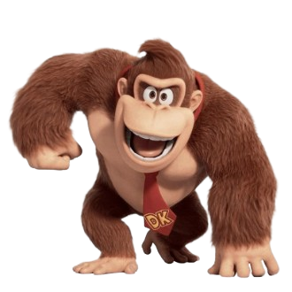

-
MARIO
Descrição
Mario é um encanador italiano corajoso e determinado, é conhecido por seu chapéu vermelho, bigode característico e sua habilidade de saltar alto. Ele vive no Reino do Cogumelo e está sempre disposto a enfrentar perigos para salvar a Princesa Peach e seus amigos das garras do maligno Bowser. Ao longo dos anos, Mario se tornou um ícone global dos videogames, estrelando em inúmeros jogos de plataforma, corridas e até esportes.
-
LUIGI
Descrição
Luigi é o irmão mais novo de Mario e também um encanador. Ele é mais alto e veste um chapéu e macacão verdes. Embora muitas vezes viva à sombra de Mario, Luigi é um herói por direito próprio. Ele é conhecido por ser um pouco mais medroso, mas ainda assim corajoso quando seus amigos estão em perigo.
-
BOWSER
Descrição
Bowser, também conhecido como King Koopa, é o rei dos Koopas, uma raça de tartarugas antropomórficas, e constantemente tenta conquistar o Reino do Cogumelo e sequestrar a Princesa Peach. Bowser é grande, poderoso e possui habilidades de cuspir fogo. Ele é um estrategista astuto, mas seus planos são frequentemente frustrados por Mario e seus amigos. Apesar de ser um vilão, Bowser tem momentos de colaboração com Mario, especialmente em jogos como "Super Mario RPG" e "Mario & Luigi: Superstar Saga".
-
PRINCESA PEACH
Descrição
Princesa Peach Toadstool é a amada governante do Reino do Cogumelo. Ela é conhecida por sua bondade, coragem e sabedoria. Peach frequentemente se encontra em apuros, sendo sequestrada por Bowser em várias ocasiões. Apesar disso, ela não é uma donzela em perigo passiva; Ela tem uma queda por Mario, que está sempre disposto a resgatá-la.
-
COGUMELO TOAD
Descrição
Toad é um dos servos leais da Princesa Peach e residente do Reino do Cogumelo. Ele é pequeno, tem uma cabeça em forma de cogumelo e veste um colete azul com calças brancas. Toad é um personagem amigável e alegre, sempre disposto a ajudar Mario e seus amigos.
-
YOSHI
Descrição
Yoshi é um dinossauro amigável e leal que vive na Ilha Yoshi. Ele é reconhecido por sua língua longa e pegajosa, que usa para capturar inimigos e objetos. Yoshi é um dinossauro amigável e leal que vive na Ilha Yoshi. Ele é reconhecido por sua língua longa e pegajosa, que usa para capturar inimigos e objetos.
-
DONKEY KONG
Descrição
Donkey Kong é um poderoso gorila que vive na Donkey Kong Island. Ele é conhecido por sua força incrível e seu amor por bananas. Donkey Kong lidera sua família de kongs em aventuras para proteger sua ilha e suas preciosas reservas de bananas de inimigos como o King K. Rool.